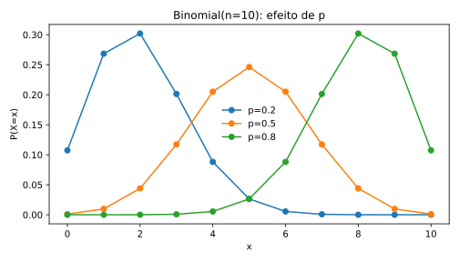
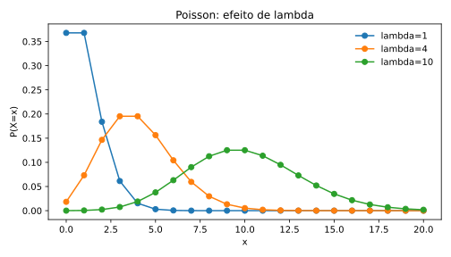

VAD
Variáveis aleatórias discretas
Distribuições para contagens e resultados enumeráveis, com atenção à interpretação dos parâmetros e à parametrização usada pelo R.
Estrutura de uma VAD
Bernoulli
Modela uma única tentativa com dois resultados, usualmente sucesso (1) e fracasso (0).
\(p\) é a probabilidade de sucesso. No R, Bernoulli é um caso particular da binomial com size = 1.
dbinom(1, size=1, prob=0.08) rbinom(1000, size=1, prob=0.08)
Uniforme discreta
Todos os \(m\) valores do suporte têm a mesma probabilidade.
Não há uma função base específica para a uniforme discreta no R; pode-se usar sample().
sample(1:6, size=1000, replace=TRUE)
Binomial
Conta sucessos em \(n\) ensaios de Bernoulli independentes com probabilidade constante \(p\).
\(n\) é o número de ensaios, \(p\) a probabilidade de sucesso e \(x\) o número observado de sucessos.

dbinom(4, size=10, prob=.3) # P(X=4) pbinom(4, size=10, prob=.3) # P(X<=4) qbinom(.95, size=10, prob=.3) # quantil 0,95 rbinom(1000, size=10, prob=.3) # simulação
Hipergeométrica
Conta sucessos em amostragem sem reposição de uma população finita.
\(N\) é o tamanho da população, \(K\) o número de sucessos na população e \(n\) o tamanho da amostra. No R, dhyper(x, m, n, k) usa m=K, n=N-K e k como tamanho da amostra.
dhyper(2, m=10, n=90, k=8) phyper(2, m=10, n=90, k=8) rhyper(1000, m=10, n=90, k=8)
Poisson
Modela contagens de eventos em uma região de tempo, espaço ou exposição sob taxa média constante e hipóteses adequadas de ocorrência.
\(\lambda>0\) é o número médio de eventos na unidade considerada.

dpois(3, lambda=2.5) ppois(3, lambda=2.5) qpois(.95, lambda=2.5) rpois(1000, lambda=2.5)
Geométrica
Modela o número de tentativas até o primeiro sucesso. Atenção à parametrização.
dgeom(x, prob) usa \(x\) como o número de fracassos antes do primeiro sucesso, com suporte \(0,1,2,\ldots\). Portanto, para número de tentativas, use dgeom(x-1,p).Binomial negativa
Uma parametrização comum conta o número de fracassos antes do \(r\)-ésimo sucesso.
Essa é a parametrização padrão de dnbinom(x, size=r, prob=p) no R. O R também aceita a parametrização por mu.
dnbinom(5, size=3, prob=.4) pnbinom(5, size=3, prob=.4) rnbinom(1000, size=3, prob=.4)